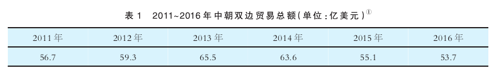

收录于合集
★
摘要： 美国对朝鲜半岛的政策是其亚太战略的重要组成部分。基于中美亚太主导权竞争的需要，美国极力谋求削弱中国在朝鲜半岛的影响，为此采用了楔子战略，意在对中朝、中韩关系进行双重分化。美国分化中朝关系主要采取“以压促变”的方式，对中朝进行“拉打结合”的区别对待，不断加剧中朝两国内部的矛盾，使得朝鲜成为中国的战略负担而非战略资产。对于分化中韩关系而言，美国在经济方面采取签署美韩 FTA、拉拢韩国加入TPP和阻止韩国加入亚投行等方式的效果有限，而在安全方面的楔子战略相对更加有效，“萨德”入韩便是明显的例证。美国在朝鲜半岛谋求双重分化的楔子战略加剧了朝鲜半岛局势的复杂性，也使得中美战略竞争加剧，导致东北亚分化更加严重。
★
近年来，中国与朝鲜半岛双方的关系发生了重要变化，在“萨德”入韩之前，一方面是中朝关系持续冷淡，另一方面是中韩关系不断升温。中朝关系冷淡的原因是多方面的，既与中朝两国领导人更替后的战略调整有关，也与中朝两国对于朝核问题的分歧相关，同时也不应忽视美国因素对于中朝关系的影响。在中韩关系的发展过程当中，美国因素则一直具有重要影响。尽管中韩互为重要贸易伙伴且存在诸多共同利益，但中韩关系的发展进程经常被美国因素所打断。如果将这两件事联系起来，实际上可以发现美国在朝鲜半岛对华采取了楔子战略，对中朝关系、中韩关系进行双重分化，意在削弱中国对朝鲜半岛事务的影响力，继续维持美国亚太主导地位。现有的美国官方文献中，可以发现美国试在朝鲜半岛实施楔子战略。
美国为了维护亚太地区主导权，需要掌握朝鲜半岛事务的主导权。中国是影响美国主导朝鲜半岛事务的重要因素。一方面，中朝是传统同盟关系；另一方面，中韩经贸关系不断加强，政治合作也不断升温。基于主导权维护的考虑，美国不愿中国主导朝鲜半岛事务，因而一方面想方设法离间中朝关系，使得朝鲜成为中国的战略负担而非战略资产；另一方面则不断阻止中韩接近，避免中韩关系好过美韩关系，从而对美国亚太联盟造成巨大冲击。本文将主要基于楔子战略的视角分析近年来美国对朝鲜半岛的楔子战略，即对中国与朝韩双方的关系进行双重分化，并对其运作过程和影响进行分析。
美国亚太战略视野中的朝鲜半岛
美国是当今世界首屈一指的大国，格外在意其世界主导地位。谋求主导地位也是奥巴马政府期间一系列安全战略报告的核心目标。奥巴马总统十分看重美国的主导地位，竞选时就打出了“重振美国领导地位”的旗号，认为美国的领导是世界应对诸多挑战的重要保证。随着亚太地区在全球战略中的地位不断提升，美国对于亚太地区主导权极为重视。2011年，时任国务卿希拉里撰文《美国的太平洋世纪》，认为亚太联盟是美国亚太主导地位的重要支柱。2012年4月，奥巴马总统在美日两国发表联合声明后表示，美国要继续保持亚太主导地位。2015年1月，奥巴马发表国情咨文，明确表态美国不会将亚太地区规则制定权拱手相让，因为在奥巴马政府看来，规则制定权是主导权的重要构件。
显而易见，奥巴马政府对美国的主导地位自信满满，对中国的挑战则十分警惕。亚太地区不仅存在中、美、日、俄、印等大国，还有韩、澳、印尼等重要中等强国。随着亚太地区战略地位的提升，各大国对亚太地区的战略关注显著增强，致使大国在亚太地区的竞争趋向激烈，亚太地区形势也日益复杂。对于美国的全球主导地位而言，亚太地区的主导地位至关重要，面临的挑战也最为显著，这在未来很长一段时间不会有太大的改变。对于美国而言，维持美国的全球优势地位是冷战后美国大战略的重要目标，这也是冷战后美国大战略论争为数不多的共识所在。随着中美实力差距的缩小，中美两国在亚太地区的战略竞争日益具有全球和地区的双重意义，中美两国在亚太地区的主导权竞争也更加凸显。为了限制中国对其亚太主导权的挑战。美国主要采取了增强亚太前沿存在、强化联盟关系、加强规则建设和分化中国周边关系等多种策略，其中分化周边关系明显涉及楔子战略的运用。
对于美国的亚太主导权维护而言，朝鲜半岛具有十分重要的地位。朝核问题的走向关系到美国维护国际核不扩散体系的全球领导力，美韩同盟的走向则影响美国亚太盟友对其的信任。朝鲜半岛处在中美战略竞争的前沿地带，是中美亚太主导权竞争的晴雨表。奥巴马政府期间，美国的朝鲜半岛政策则是其亚太再平衡战略的重要组成部分。朝核问题不过是其亚太战略棋子，其更多是依据其亚太战略的整体情况来应对朝核问题。因而解决朝核问题在美国看来并非最终目的，反而是可以利用的工具。
对于美韩联盟而言，美国对于中韩关系的不断发展有所担忧，在朴槿惠出席中国9·3阅兵、韩国加入亚投行的问题上，美国方面都施加了一定的压力，这也反映了美国基于自己的战略意图和利益考虑，对韩国的对华交往施加限制。其重要原因在于美国认为其亚太联盟和伙伴关系是美国亚太主导权的重要基础，中韩关系的发展会削弱美韩联盟，进而损害美国的亚太主导权。
综上所述，从较为宏大的战略视野来看待美国的朝鲜半岛政策，可以发现美国目前主要是基于其亚太主导权维护来实施其朝鲜半岛政策，因而核心在于如何削弱和限制中国在朝鲜半岛的影响。基于此考虑，美国谋求对中朝、中韩关系进行双重分化，为此采取了楔子战略。
楔子战略：美国对中朝、中韩关系的双重分化
楔子战略是国际关系中的常见战略。学术界目前对于楔子战略的研究主要涉及概念界定、机制运作与效果检验。一般而言，楔子战略的概念可以界定为“联盟、国家行为体或次国家行为体基于阻止潜在的敌对联盟形成或分化、破坏、瓦解已经形成的敌对联盟的目标，综合运用政治、经济和军事等资源，采取对抗或调适等战略手段来实现这些战略目标的艺术和科学。”“楔子战略的战略目标主要包括联盟重组、联盟解除、联盟预阻和联盟分化四种。” “楔子战略的手段主要涉及语言、经济、政治和军事四类，其作用机制主要基于利益关系，通过调适战略对象对于联盟利益的认知，使其认为背叛盟国有利可图。”
受冷战后“安全化”的影响，“安全”已经拓展到经济、社会、环境等诸多领域，联盟的内涵也有所扩大，不再仅仅局限于传统的军事安全领域。楔子战略的运用也因此发生了改变，其运用对象不仅可以针对联盟关系，也适用于国家之间的影响力竞争、主导权竞争。随着中美亚太主导权竞争加剧，两国都在尝试运用楔子战略来削弱对方的主导权。在朝鲜半岛地区，中美两国相互实施楔子战略的现象更是十分显著。
对于中国而言，如何化解美国亚太联盟对中国的负面影响，对美国的亚太联盟进行一定的弱化，削弱其联盟的对华针对性、威胁性不失为一条路径，实际上也是楔子战略的运用。近年来，中国对韩国的经济和政治影响不断增强，中国想凭此在一定程度上削弱美韩联盟。不过美国并不会坐视中国在韩国的影响增强，为此采用了一系列措施来阻止中韩关系的发展以谋求联盟预阻。在韩国加入TPP、亚投行等问题上不断施加压力，极力推动“萨德”入韩更是导致中韩关系深受重创。
对于朝鲜，美国从未放弃意识形态的偏见，朝核问题的久拖不决实际上也被认为是美国想以此牵制各方，服务于其亚太战略。在美国看来，如果能够削弱中国对朝鲜的影响力，使得中朝两国内部矛盾加剧，朝鲜将成为中国的战略负担而非战略资产，这实际上是非常有利于美国亚太主导权维护，同时也极大地限制了中国亚太主导权提升。事实上，利用核问题分化敌对同盟，美国并非毫无经验。中苏关系的分裂与美国当时的楔子战略不无关系。“核武器具有巨大杀伤力和高度敏感性，对于联盟关系的影响深刻而复杂。中苏在核合作方面存在供需矛盾，成为中苏同盟关系恶化的重要根源。”美国则利用中苏核分歧分化中苏关系，主要方式便是对苏中“拉打结合”，即拉拢苏联，打压中国的区别对待。对于当前的朝核问题，美国可以如法炮制，利用朝核问题分化中朝关系。通过对中朝进行拉打结合，利用中朝双方对于朝鲜发展核武器、对美政策的分歧来离间中朝关系。
对于中美在朝鲜半岛影响力竞争而言，美国深知中国具有地缘和经济优势，而美国的优势在于美韩同盟和中国对于中美关系稳定发展的诉求。为了在中美的朝鲜半岛竞争中不落下风，美国既不能采取战争手段，也无法完全依靠经济手段，主要通过楔子战略的运用来对中朝、中韩关系进行双重分化。具体而言，对于中朝关系是“以压促变”谋求联盟分化；对于中韩关系则是以联盟巩固实现联盟预阻。
以压促变：美国不断分化中朝关系
中朝关系是冷战期间历经朝鲜战争而形成的。但历经60多年的发展，中朝之间并非毫无矛盾。冷战期间，朝鲜利用中苏矛盾两头讨好，左右逢源获取经济援助，在中苏之间尽可能地实施等距离外交。冷战后，由于国际环境的巨大变迁和中国对外政策的重大调整，中韩建交曾经一度对中朝关系造成了冲击。不过随着苏联解体和俄罗斯的自顾不暇，朝鲜对中国的经济依赖显著增加，对华贸易甚至占其对外贸易的80%以上。在朝核危机爆发后，中国成了朝鲜能源的重要援助国。中国还是朝鲜最大的贸易伙伴、最大的援助国，但这些并不足以保证中国对朝鲜能够施加很大的影响。
对于美国而言，尽管近年来其政府也逐渐认识到中国对朝鲜的影响有限，但依然希望中国能够在朝核问题中发挥主要作用，能够约束朝鲜的核导行为，成为对朝制裁的主力军。其目的可谓一箭三雕，一是可以增强对朝鲜制裁的强度，加剧其核武器研发的困难；二是可以规避或减少美国在朝核问题上的责任；三是将中国推向朝核问题的重要责任方，让中国参与国际制裁，既让中国肩负更多责任，又离间了中朝关系。可以说，美国并非单纯仅关注朝核问题，而是将朝核问题视为其亚太战略的一枚棋子，置于中美亚太主导权竞争当中。在提交美国国会的一份报告中，美方意识到美国可以利用中朝关系来解决朝核问题，同时也意识到中朝分歧可以为美国所利用。中朝之间利益与矛盾共存，美国可以通过影响中国的对朝政策来影响中朝关系。中国目前的对朝政策也不仅仅是基于双边视角，还需要考虑中国作为何种全球角色以及如何处理中美关系。为了分化中朝关系，美国主要采取了“以压促变”的方式，即通过对朝鲜不断施加经济、安全等压力，而朝鲜则在各种压力之下，不得不更加寻求中国的帮助，但中国反对朝鲜拥核，并且还要遵守相关国际条约和顾全中美关系大局，难以完全满足朝鲜的援助要求并且还不得不对朝鲜进行制裁，这就使得中朝关系的内部矛盾加剧，显著体现了两国高层交往较少、经贸往来、人文交流等冷淡甚至下降。中国海关总署公布的数据显示，2015年中朝贸易额比上年减少了13.7%，朝鲜的主要产品煤炭、铁矿石价格下降是导致对华出口减少的主要影响因素。2016年，中朝贸易总额为53.7亿美元，较2015年下降2.5%。其重要原因在于2016年联合国对朝鲜实施了两轮制裁，涉及煤炭、铁矿等朝鲜向中国出口的主要物品。美国分化中朝关系的楔子战略，除了不断对朝鲜施加压力外，也不断地拉拢中国承担更多的责任，显著体现为舆论上的“中国责任论”和制裁上的“中国主力论”。

（一）舆论上的“中国责任论”
朝核问题的久拖不决，美国应该负首要责任。无论是美国的能力还是朝鲜对美朝关系的重视，美国对于朝核问题的解决都至关重要。不过美国政府历来在解决朝核问题上比较消极。“美国针对朝核问题的战略在目标、资源与手段之间存在失衡，其结果是促使朝鲜更倾向于发展核武器。”不过美国并不认为其需要对朝核问题负主要责任，而是将中国推向朝核问题的前沿，认为中国应该为朝核问题负主要责任，实际上谋求分化中朝关系。
美国官方曾认为，中国是朝鲜的盟友、朝鲜最大的贸易国和援助国，中国可以对朝鲜施加影响来阻止朝鲜拥核，中朝关系对美国解决朝核问题有利。相比于美国与朝鲜联系甚少，美国认为中朝之间的密切联系可以发挥作用。特朗普上台后，多次就朝核问题发表言论也一再表示，中国应该在朝核问题中发挥重要作用。事实上中国对朝鲜的影响力比较有限，美国官员也并非毫不知情，那为何依然坚持要中国承担首要责任呢？
2016年1月7日，朝鲜第四次核试验后，美国国务卿克里批评中国对朝政策失败。不过这一说法并不为美国官员所共识。美国前驻华大使洪博培很早表达了不同意见，认为中国虽然会对朝鲜施加影响，但朝鲜并不一定听从中国甚至会欺骗中国。克里对中国对朝政策的批评也遭到中国官方的反对。中国外交部发言人随后表示，朝核问题的由来和症结不在中国，解决问题的关键也不在中国。王毅部长更是明确表态中方不是半岛核问题的主要矛盾方。一些报纸如《人民日报》、《环球日报》则直言不讳美国应当对朝核问题负首要责任。显而易见，美国的政治精英们已经认识到中朝关系已经大不如以前，中国对朝鲜影响有限，那么美国国务卿克里为何还要明知故问，要求中国向朝鲜施加压力呢?很明显，美国的战略意图不是“想最终解决朝核问题，而是想借此破坏中朝关系”。当然，克里并不是最后一个如此做的人，特朗普上台后也已多次表态中国应该在朝核问题上承担主要责任。
对于美国将中国推向朝核问题的前沿，中国的一些专家和学者就直言不讳这是美国离间中朝关系的伎俩。张召忠表示，美国的对朝战略，无时不在想方设法离间甚至破坏中朝友谊，谋求分而治之。任卫东则表示，美国将朝核问题的责任转嫁给中国，意在制造中朝分歧乃至中朝对抗。李敦球则明确指出，美国将中国推向朝核问题最前沿，意图挑拨中朝关系。
在舆论上，美国将中国推向朝核问题前沿，大肆炒作“中国责任论”，将中国督促朝鲜遵守《国际核不扩散条约》、参与对朝制裁视为中国国际责任的表现，也是中美合作的重要内容，并且还认为中国应该发挥首要责任。在“中国责任论”的舆论压力下，中国不得不规劝朝鲜，但实际影响有限，还使得朝鲜认为是中美联手打压朝鲜，朝鲜对中国的怨恨增加，中朝关系恶化。受“中国责任论”舆论影响，中国国内对朝政策也存在巨大分歧，一些人视朝鲜为战略缓冲地带，认为中朝关系必须维护。而一些人则认为朝鲜发展核武器对中国是重要威胁，中国应该不顾一切地反对朝鲜拥核。
（二）制裁上的“中国主力论”
针对朝鲜的核试验，美国不遗余力地推动多边制裁，实际上是在行动上将中国推向了多边制裁的主力军。由于中国是朝鲜的最大贸易伙伴和援助国，美国深知没有中国的参与，对朝鲜的多边制裁效力有限。不过中美两国在对朝制裁上存在分歧，中国主张对朝鲜的制裁不能损害其民生，美国则主张进行最为严厉的对朝制裁，中国只愿参与联合国框架下的多边制裁，美国则在多边制裁之外还联合其盟友施加单边制裁。中国参与对朝制裁容易陷入困境，一方面，作为安理会常任理事国，中国一旦同意联合国安理会的制裁决议就需要认真落实，否则将有损中国负责任的大国形象；另一方面，参与制裁又会损害中朝关系，太严厉的制裁甚至会将朝鲜逼向极端。
2016年3月2日，安理会通过了制裁朝鲜的2270号决议。针对联合国出台的史上最严厉的制裁，朝鲜政府发表了措辞强硬的声明。该声明实际上表达了对中国的不满。2016年11月30日，联合国安理会通过制裁朝鲜第2321号决议，这项制裁将极大地减少朝鲜外汇收入，中朝贸易深受影响。为执行联合国安理会第2321号决议，中国自2017年2月19日起暂停进口朝鲜原产煤炭，但引起了朝鲜方面的极为不满。2017年2月23日，朝中社发表评论，以尽管不点名但影射十分明显的方式表达了对中国的强烈不满。显然，由于中国参与两轮联合国框架下的对朝制裁，朝鲜对中国的负面认知不断增加，中朝关系实际上也受到损害。
总体来看，美国分化中朝关系的楔子战略主要采取了低成本的舆论战和经济制裁，对中朝双方进行区别对待，对中国是不断利用国际合作进行拉拢，将中国推向朝核问题的前沿，利用中国对中美关系大局稳定、国际形象等考虑来参与朝核问题解决。美国甚至经常采取议题联系战略向中国施加压力来应对朝鲜。对朝鲜而言，美国则是一味地施压，增加了朝鲜的内外困难，使得其不得不更加依赖中国。美国利用中朝在朝核问题上战略分歧，采取拉打结合的方式来实施楔子战略，实际上使得中朝双方对朝核政策的分歧增大，朝鲜对中国的援助减少和参与对朝制裁不乏抱怨，中国对朝鲜老惹麻烦也有所不满。中朝关系的恶化也使得中国比较担忧中朝关系破裂甚至走向对立，而美朝关系的改善却不乏可能。中朝关系的恶化极有可能推动美朝关系的改善，如同当年中美苏三国关系的变革一样，这是中国所不愿看到的，而美国对中朝关系所实施的楔子战略却有可能促成中美朝关系变革。
联盟预阻：美国阻止中韩关系接近
1992年中韩建交以来，两国关系发展良好。不过对于中韩关系的发展，“美国因素”和“朝鲜因素”的影响不容忽视。随着中韩关系的发展，韩国面临着在中美之间的选择困境。在美国看来，中韩不断接近削弱了美韩联盟。这也促使美国采取楔子战略来进行联盟预阻，阻止中韩不断接近。尽管韩国与中国形成军事联盟的可能性较小，但中韩关系过于紧密还是令美国担忧，美国需要防止中韩关系超过美韩关系。美国的楔子战略主要在经济与安全两个方面发力。经济上则是通过美韩FTA、TPP，平衡中韩经贸关系发展、韩国加入亚投行和签订中韩FTA的影响。安全上主要是通过推动美韩联盟转型和促进日韩安全合作，继续维持韩国对美国安全的需求，更为严厉的是直接在中韩之间打入“萨德”楔子。
中韩关系当中存在的一些问题特别是安全短板使得美国的楔子战略存在成功的可能性。对于中韩关系而言，经贸关系的日益密切无法弥补安全合作的短板。美韩决定部署“萨德”系统表明，尽管中韩政治与经济关系发展良好，但如果中国无法解决韩国的安全担忧，而美国却显示了其在关键时刻能够为盟友提供安全保障的能力，中国在争取韩国方面将比较有限。正因为如此，美国在经济上阻止中韩接近效果有限后，利用安全问题来离间中韩关系则效果明显。
（一）经济拉拢
在经济领域，为了阻止中韩关系发展，美国的楔子战略运作显著体现在美韩FTA、TPP和亚投行等问题上。通过签订美韩FTA和邀请韩国加入TPP不断拉拢韩国，美韩经贸关系会更加紧密，同时也能在一定程度上对冲中韩经贸关系。阻止韩国加入亚投行则是直接防止中韩经贸合作升温。
对于美韩FTA的签订与生效，很难单纯基于经济因素予以解释，一些学者认为美韩FTA的主导逻辑是联盟关系。其理由在于美韩FTA的签署有助于美韩联盟转型。不过从美韩FTA签署与生效的一波三折历程来看，中国因素的影响不容忽视。“美国签署美韩FTA的重要战略诉求便是平衡中韩经贸关系的发展。韩国签署美韩FTA则谋求避免过度依赖中国和减少美国对其的离心疑虑。”
除了美韩FTA签署有美国阻止中韩关系过于紧密的考虑外，在TPP、亚投行等议题上，美国实际上也想借此分化中韩关系。
TPP被认为是美国希望通过重塑贸易规则来谋求亚太地区的经贸主导权，韩国在加入TPP问题上一直比较犹豫。“韩国加入TPP显然有助于增强美韩同盟而削弱中韩关系。由于美韩已经签署了高水平的FTA，因而加入TPP对韩国的经济边际效益有限。但利用加入TPP作为筹码又可以在中韩FTA谈判中逼迫中国让步。”中韩FTA签署的结果也显示，中国在农产品、服务业等方面对韩国做出了让步。不过韩国对TPP的态度一直在变化，这也是其不断权衡其与中美两国关系的结果。如果韩国一旦正式加入TPP，对中韩FTA的冲击将不可避免。只是目前特朗普政府取消了TPP，这方面的影响暂时可以排除，但从此前美国极力拉拢韩国加入TPP来看，其平衡中韩关系的战略考虑还是比较明显。
在加入亚投行问题上，美国分化中韩关系更为直接。从自身经济利益来看，韩国理应加入，不过美韩联盟成为韩国的顾虑，美国的反对态度使得韩国不得不三思而行。有学者指出，韩国迟迟未能宣布加入亚投行的最根本原因是美国的反对。韩国国内在是否加入亚投行问题上主要存在参与论和现实论两种声音，对中韩、美韩关系的兼顾非常明显。但随着美国欧洲盟友不断加入亚投行，韩国单方面承受的联盟压力大为减少，最终也得以加入亚投行。
就经济方面而言，美国阻止中韩关系发展的效果比较有限，因为中韩经贸关系日益密切，
自然形成了一个经济利益共同体。对于韩国民众而言，对经济利益的诉求将在很大程度上影响政府的决策。美国虽然担心中国对韩国的经济影响损害美韩同盟，但能够做的不多。美国既不能采取经济制裁来阻止中韩经贸关系升温，又难以采取经济奖赏（主要是经济援助和提供贸易便利条件等）来提升美韩经贸关系。但在安全方面，美国分化中韩关系则比较有效。
（二）安全捆绑
对于近期中韩关系的恶化而言，“萨德”入韩是重要原因。关于“萨德”入韩一事的讨论由来已久。韩国认为自身在安全方面面临朝鲜的威胁，可以采取一切手段来维护自身安全，当然部署“萨德”系统也在一切手段之列。2016年1月13日，在朝鲜第四次核试验后，朴槿惠对国民发表谈话，表示出于国家安全考虑，韩国将研究部署“萨德”系统问题。中国对此最初主要保持克制态度，劝告韩国不要部署，但并未对韩国进行批评，而是认为这是美国借核危机“夹带私货”，中国外长王毅在2016年慕尼黑安全会议上指出：“美拟在韩部署萨德：项庄舞剑意在沛公”。
2016年7月，美韩双方宣布就部署“萨德”系统达成一致，引发中国舆论的强烈反应。特别是时值菲律宾挑起的南海仲裁案即将公布，韩国的此举更是被认为是落井下石，引发中国民众和舆论的强烈不满，新华社罕见地发表“七论萨德”。中国外交部和国防部多次表明立场，表示“萨德”部署损害中国安全利益，也不利于地区安全。9月5日，G20杭州峰会期间，中韩两国元首就“萨德”问题进行了沟通，但分歧依旧。在舆论战无法促使韩国改变主张后，中国政府也开始在经济、文化交流等方面采取了一些限制措施。尽管这些措施力度不强，重在释放信号并希望韩国政府能够悬崖勒马。韩国官员虽然最初表态希望该问题能够政经分离，“萨德”入韩不至于影响中韩关系大局。但随后韩国政局陷入动荡，在“萨德”问题上并未做出实际让步，韩国国内保守派力量甚至想趁乱将“萨德”入韩的生米煮成熟饭，中韩关系也因此遭遇实际损害。中国官员将“萨德”入韩的主要原因归结于美国，实际上也是希望韩国政府能够做出改变。在美韩双方宣布“萨德”入韩后，中韩双方在此问题上多次沟通未果，加之韩国政局动荡，两国政府高层交往基本陷入停滞状态，这对中韩关系造成了极大的冲击。
综上所述，“萨德”入韩对中韩关系造成了巨大影响。回顾“萨德”入韩，可以发现美国扮演了重要的“推手”角色。“2014年，美国公开推动在韩国部署“萨德”，“萨德”入韩是美国构建亚太和全球反导体系的重要一环，矛头显然不是朝鲜，而是指向中俄。”2015年以来，美国更是加紧对韩国施压，不断通过军方、外交部门等多种渠道试探和推动“萨德”入韩。在美国的积极推动下，韩国也是亦步亦趋，不过对中国则是遮遮掩掩。
对于韩国而言，“萨德”系统对于韩国的安全效力比较有限，但韩国为何愿意“萨德”入韩呢？其原因相对比较复杂，既与美国施加的巨大压力有关，也不乏韩国国内政治博弈的影响。由于战略目标的分歧，美韩双方在“萨德”系统的运用上存在分歧，韩国主要想借此对付朝鲜，但美国却将矛头指向中俄。对于韩国而言，部署“萨德”的负面影响明显，对于朝韩关系、中韩关系和东北亚安全都产生了不良影响。
总之，美国推动“萨德”入韩具有明显的楔子战略意图：“一方面，在安全层面强化美韩同盟；另一方面，在中韩之间打入楔子，破坏中韩关系近年来的发展。”“萨德”问题表面咎于朝核问题，实质在于美国对中国的牵制与对冲。通过在韩国部署“萨德”，美国能够实现加强对华战略侦察监视、整合同盟体系和离间中韩关系的三重目的。
双层谋划：中国的应对策略思考
美国在朝鲜半岛的楔子战略运用目前已经对中国与朝韩关系造成了一定的冲击，也削弱了中国在朝鲜半岛的影响力，如果听任这一局势发展下去，其对中国国家利益和地区影响力的损害会日益加深。应对美国在朝鲜半岛谋求双重分化的楔子战略，中国需要从中美关系和中国与朝韩关系两个层面进行谋划，在中美、中朝、中韩三个方面进行应对。
一是尽力缓解或化解中美主导权竞争。美国之所以要在朝鲜半岛实施楔子战略，谋求双重分化，其根本原因还在于美国的亚太主导权维护。在美国看来，主导权具有排他性和唯一性，美国长期以来所掌控的亚太主导权目前遭到了中国崛起的挑战，中美亚太主导权竞争具有零和性，因此美国必须想方设法来削弱中国的地区影响力，进而阻止或滞缓中国获得亚太主导权。要减少美国在朝鲜半岛谋求双重分化对中国国家利益的损害，从源头上还是要尽力缓解或化解中美亚太主导权竞争。不过解决中美亚太主导权竞争的关键还在于对主导权性质的认知，如果认为主导权具有排他性和唯一性，主导权的零和竞争似乎不可避免，如能通过合作与沟通推动两国对主导权的共享性、多元性达成共识，中美之间就有可能超越主导权竞争困境，两国围绕着主导权竞争的一系列难题就可以迎刃而解，美国在朝鲜半岛实施楔子战略的战略诉求也会大为削弱。不过推动中美亚太主导权竞争的缓解或化解并非易事，也必将经历艰难且漫长的过程。但中国在朝鲜半岛的利益不能承受长期损害，因此谋求化解中美主导权竞争的同时，也需要采取更有针对性的应对策略来处理好中国与朝韩双方的关系。
二是加强中朝关系的管理，防止中朝关系因“楔”生变。中国应该吸取冷战时期中苏关系因美国楔子战略加速分裂的教训，防止中朝关系反目成仇甚至兵戎相见。尽管中朝关系内部存在诸多分歧，但两国之间也存在不少的共同利益。中朝关系应加强管理。首先，需要缩小战略分歧。目前中朝双方的最大战略分歧便是朝核问题。中国需要明确告知朝鲜，实现半岛无核化是目前中国对朝鲜的最大战略诉求，除此之外，中朝两国存在大量的共同利益和合作空间。目前中国之所以参与多边制裁是中国自身利益诉求和国际责任的共同需求，对朝鲜并无恶意。其次，中国可以增强对朝鲜的安全承诺以减少朝鲜的“被抛弃”感。朝鲜发展核武器很大程度上受其不安全感推动，这种不安全感既源自美韩同盟的安全压力，也源自对盟友的不够信任，使得其联盟困境中的“被抛弃”担忧增加。如果中国能够增强对朝鲜的安全承诺，并反对美韩滥用武力威胁朝鲜，可以在一定程度上削弱朝鲜发展核武器的安全动力。事实上，中国多次宣称不要让朝鲜半岛“生战胜乱”和推动美朝和解，也可以视为增强对朝鲜的安全承诺。最后，拓展中朝关系的利益基础。目前中朝关系的利益基础略显单薄，这也使得两国关系抗风险能力有待加强。加强中朝关系的利益基础的关键在于要不断推动朝鲜经济潜力的释放，通过双边和多边经济合作，逐渐引导朝鲜国家利益认知更加多元化，改变朝鲜有些偏执的“安全优先”的利益认知，引导朝鲜对经济利益更加重视，使得中朝关系的利益基础能够有所拓展，进而能够从更为广泛的总体利益来应对双方的战略分歧。
三是稳定中韩关系防止“因小失大”。中韩建交以来，两国关系的发展还是值得肯定的，两国经贸合作的日益加深和利益交融增强了两国共同利益的基础。不过中韩关系的安全短板和美朝因素的时有影响也确实存在。就美国离间中韩关系的楔子战略来看，经济方面效果不大，安全方面更为有效。因而中国要稳定中韩关系需要经济与安全并进。首先，需要继续巩固和扩大两国的经济利益基础，将经济互利共赢作为两国关系发展的持续动力，增强中韩关系抗楔子战略的能力。目前中韩双方在“萨德”问题上都保持了一定的克制，实际上和两国巨大的经济利益基础不无关系，因而经济利益可以继续作为两国关系的稳定基础；其次，要防止美国在安全方面对中韩关系离间的影响不断扩大。中韩在安全上也要不断增加合作，在对朝问题上也要加强沟通，增进安全互信，形成不将彼此视为安全威胁的共识与互信。最后，增加一些中美韩三边合作机制，增加中美韩三方之间的沟通，也可以尝试推进一些中美韩军事合作，减少楔子战略发生的可能性与破坏性。
结语
回顾近年来美国政府的朝鲜半岛政策，可以发现美国对朝鲜半岛政策的清晰思路是双重分化，避免美国在亚太主导权竞争中失势。就其对朝政策而言，尽管奥巴马政府时期的对朝忍耐政策可谓不太作为，实际上是无为而治，加剧了中朝矛盾。而在对韩政策上，与中国相比，美国在经济上的劣势只能在安全上寻求弥补，通过维持韩国对美国的安全需求，美韩同盟可以得以巩固。美国为此采用了双重分化的楔子战略，其效果相对不错。不过该战略也面临着诸多问题：一是双重分化的内在制约问题，由于中美之间的竞争关系、朝韩之间的对立关系，美国谋求对中朝、中韩的双重分化势必会相互影响甚至相互抵消，削弱中朝关系的同时可能会促进中韩关系的发展，反之亦然。二是美国的战略手段相对有限，在分化中朝关系的楔子战略运用上，美国采用的是以压促变，在分化中韩关系上主要是经济与安全两手并用，但主要发挥作用的是安全手段。相对而言，美国分化中朝关系的手段有限，由于国内因素的诸多限制，难以采取奖赏手段，分化中韩关系方面主要依靠安全手段。三是加剧了中美竞争，使得朝鲜利用大国竞争从中获利，不利于中美在解决朝核问题上的合作。四是加剧了朝鲜半岛的分化。美国将谋求削弱中国在朝鲜半岛的影响力视为优先战略目标，实际上加剧了中美在此的战略竞争，也使得朝鲜半岛趋向两极化。特朗普上台以来，美国的对朝政策基本上是雷声大、雨点小，不过特朗普政府要求中国承担朝核问题主要责任的态度较奥巴马政府没有改变，在对韩关系上，尽管因美韩防务分担面临麻烦，但美国依然坚持推进“萨德”入韩，由此可见，美国的政策依然是谋求削弱中国在朝鲜半岛的影响。中国对此不能不引起高度重视，本文从较为宏大的战略路径探讨了中国应对美国的楔子战略的策略选择，在中美、中朝、中韩三组关系方面需要共同应对，形成双层谋划的思路，在具体政策上，面对美国楔子战略的恶意做法，中国必要时也可以以其人之道，还治其人之身。
文章来源： 《东北亚论坛》2017年第5期
筛选：红尘 编辑：敖遊